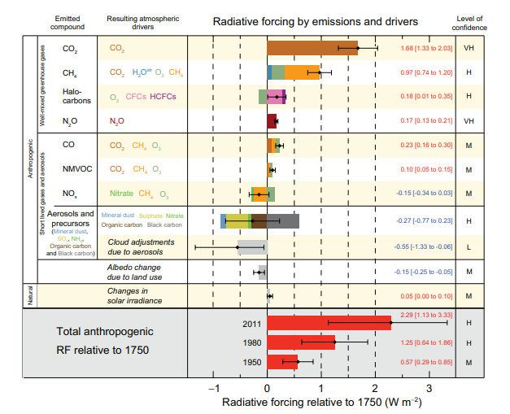
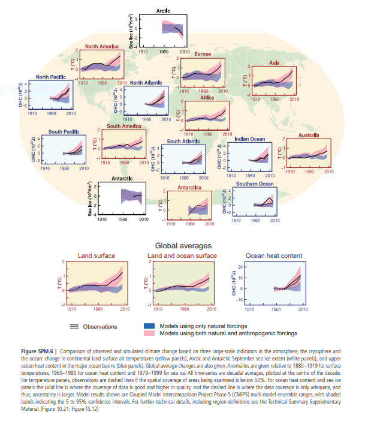

Have you ever wondered what is known about the exact mechanism that drives climate change? Sure, you know that carbon dioxide is an important driver. But what is behind all of the terms we hear in the media so often? In this page, Laura will explain the science behind climate change and why evidence shows we can attribute it to human activity.
By Laura Polzer
|
6th Mar 2021
|
20 min
We are living in times where climate patterns change on global and regional scales. These changes include a broad range of observed effects, one of them being global warming. The period of recent anthropogenic climate change has been apparent since the mid to late 20th century. Both the climate system and its changes have been studied in detail by scientists around the world to understand the underlying causes of the observed effects. Research includes interdisciplinary work, ranging from environmental physics and meteorology to atomic physics and biochemistry.
In this page, we will discover the physical science behind climate change. Firstly, we will explore how solar radiation and its interaction with the atmosphere affect climate conditions. Knowing the ways in which climate conditions are linked to heat absorption by atmospheric particles, we can identify the main drivers of climate change. In the next section, we will focus on the changes that have been observed in the atmosphere (air), hydrosphere (liquid water) and cryosphere (ice). After that, we will carefully check if these observations could be attributed to natural causes. We will scrutinise why scientists seem to be so sure that humans are responsible for Climate change. Knowing all of this, we will take a brief look at the further effects that can be expected assuming realistic conditions.
Radiation balance of the Earth
Life on Earth depends on external energy coming from the Sun. Since the Sun and Earth are separated by vacuum, the only mechanism of energy exchange is by radiation. The solar irradiation at Earth’s orbit is S0= 1362 W/m2. The Earth emits radiation as well, only at much longer wavelengths (infrared). The more radiation the Earth absorbs and the less is radiation re-emitted into space, the higher the temperature on Earth. Therefore, it is vital to understand the mechanism by which the Earth absorbs radiation from the Sun and emits infrared radiation.
Radiation Laws
These processes are described in their most basic form by Planck’s radiation law for black bodies. A black body is an idealised object which absorbs radiation of all wavelengths to 100%. A black body in thermal equilibrium, i.e. at a constant temperature, emits electromagnetic black-body radiation, which is described by Planck’s radiation equation. It describes the spectral radiance B, i.e. how much radiation is emitted per unit area and unit solid angle, as a function of wavelength. The equation takes the form:
\[E(\lambda, T)= \frac{2hc^2}{\lambda ^5}* \frac{1}{ \exp(\frac{hc}{\lambda kT})-1}\]
Where \(\lambda\) is the wavelength of light, \(T\) is the temperature of the body, \(h\) is Planck's constant, \(c\) is the speed of light in a vacuum and \(k\) is the Boltzmann's constant.
Using the above equation, we can plot the Planck emission spectrum of both Sun and Earth as a function of wavelength. Because the temperature of the Sun (TSun= 5504°C= 5777K) is much larger than those of the Earth (TEarth=30°C=303K), Earth emits radiation at lower energies and, hence, larger wavelengths. Earth’s emission lies within the infrared region. The difference in temperature also causes the total radiation emission of the Earth to be lower compared to the Sun’s.

We can use the black body approximation to calculate the emission spectrum of the Sun. However, it is evident that the Earth can hardly be called a black body. If the Earth were a black body, all visible light would be absorbed and from the outside the planet would appear to be entirely black. However, this is not the case if you recall that Earth looks fairly blue with a lot of white clouds from space. In scientific terms, we say that the surface reflectivity, also called albedo, in the visible regime is greater than zero. About 30% of radiation from the Sun is reflected, mainly by clouds, snow and ice.
Just like Earth doesn’t absorb all radiation perfectly, its emission in the infrared regime is also lowered. The mean emissivity, i.e. the effectiveness in emitting energy as radiation in the infrared regime, is only about 95% of those of an idealised black body.
Because of these imperfect absorption and emission properties, scientists call Earth a grey body. This term is misleading in the way that it has nothing to do with the actual colour of the planet. Instead, it refers to the fact that some visible light is reflected and less infrared radiation is emitted.
Global Radiation Balance: The greenhouse effect
In the simplest model the Earth is assumed to be a grey body without an atmosphere at a uniform surface temperature T. Assuming equilibrium of incoming and outgoing radiation allows us to calculate the surface temperature of the Earth.
We can determine the power transfer by radiation to or from a surface by multiplying the total radiation per square meter by the absorbing or emitting area.
If you think of the Earth, the absorbing and emitting areas are not equal. While absorbing radiation from the Sun, only part of the surface is hit by the Sunrays. In fact, the surface absorbing solar radiation equals the area of a circle of the radius of the Earth. When the Earth emits radiation, it does so through its entire spherical surface. This surface is four times larger than the area of a circle.
Recalling from the previous section, a grey body is characterised by reflection \(A>0\) for short wavelengths and emission \(\epsilon<1\) for long wavelengths. These values are therefore included in our equations.
We can obtain the surface temperature \(T\) of the Earth by assuming equilibrium of incoming and outgoing radiation:
equationSetting in the known values \(A=0.3\) and \(\epsilon=0.95\) in, we obtain: \(T =-15°C\).
If you have ever been outside at \(-15°C\), you know that these freezing conditions are definitely not the ideal for life on Earth. Our result is surely not the real mean temperature at the surface of the Earth, even if we disregarded seasons in our consideration. And this wrong result doesn’t come about because of some error in our calculation. If you are sceptical, try computing the value yourself.
The origin of difference lies within what is called the natural greenhouse effect. It is caused by heat absorption of the atmosphere. In the previous model, we disregarded the existence of the atmosphere. As it turns out the atmosphere has a large effect on climate conditions. Particularly, the well-known greenhouse gases contribute largely to the warming of Earth, even though they only make up about 0.1% of the atmosphere. To understand why this is, we have to take a look at the absorption and transmission properties of the atmosphere.

The figure shows that in the visible range most light is transmitted, whereas most of the ultra-violet and infrared radiation is absorbed. However, there is a so-called atmospheric window, a gap in the total infrared absorption where nearly unhindered infrared emission from the Earth’s surface is possible. Since this atmospheric window matches with the black body emission spectrum of the Earth (see the first figure), radiation emitted by the surface should be able to escape into space. If this were the case, the atmosphere would have a negligible effect on surface temperature.
We already know from our calculation that this is false. The solution to this problem are atmospheric greenhouse gases (mostly H2O, CO2, ozone and methane). These molecules can absorb infrared radiation to trigger rotational or vibrational transitions. As you can see in the bottom of the figure, greenhouse gases absorb parts of the infrared radiation in the atmospheric window. This additionally absorbed heat is responsible for the warming of Earth’s surface of about 30°C, from -15°C to +15°C. The largest contribution to the natural greenhouse effect comes from water (about 62%), with carbon dioxide being second with 22%.
Starting from the natural greenhouse effect it is easy to understand the anthropogenic greenhouse effect. In brief, because human activity is increasing concentration of greenhouse gases more heat is absorbed and, among other things, surface temperature rises. This topic will be investigated in greater depth, in the part Drivers of Climate Change (link?).
When taking into account the effects of both land and water surface, the atmosphere and clouds the matter becomes more complicated. However, the effects of certain key parameters can be calculated. In figure 3, the global energy balance is depicted schematically. Numbers indicate best estimates for the magnitudes of the globally averaged energy balance components together with their uncertainty ranges. Numbers are based on the latest climate report of the IPCC (AR5,2013).

In the figure, we can see that there is incoming radiation from the Sun and outgoing radiation from the Earth. Only about 50% of incoming solar radiation is absorbed by the surface. You can see on the very right that most of the outgoing infrared radiation is reabsorbed by greenhouse gases in the atmosphere. In total, there is an energy imbalance that leads to heat absorption by the surface (left hand bottom).
Reality is still much more complex. Scientists have to take into account absorption spectra, concentration profiles of trace gases, clouds, latitudinal and seasonal variation. For our consideration, these calculations are far too complex. Nevertheless, it is interesting to take a look at the parameters that have been identified by scientists as key for climate conditions and to investigate how these parameters drive climate change.
The IPCC is an intergovernmental institution, which summarizes the latest research of thousands of scientist around the world for political decision-makers. The goal of the reports is to offer the basis for science-based decisions without giving recommendations for action. It was awarded the Nobel peace prize in 2007. We used the data of their fifth and most recent Assessment Report. To learn more about the IPCC and their findings, we encourage you to take a look at their website and the AR5.
Drivers of Climate Change
As we have seen in our physical analysis in the previous section, the concentration of greenhouse gases in the atmosphere strongly influences temperature on Earth, even though they only compose 0.1% of gas in the atmosphere.
In fact the main driver of climate change is the increase in atmospheric concentrations of greenhouse gases, particularly in carbon dioxide, methane, nitrous oxide and halocarbons, due to human activity.
While all of these gases trap thermal energy within the atmosphere, the origin of these gases varies. Carbon dioxide mainly originates from the combustion of fossil fuels, methane comes from agricultural practices and nitrous oxide accrues during the burning of fossil fuel. Halocarbons on the other hand are mostly man-made chemicals, which have been applied as solvents or refrigerants.
Carbon dioxide surely is the most well-kown greenhouse gas. Its atmospheric concentration has been measured since the 1950s. Atmospheric concentrations are usually given in parts per million (ppm). Carbon dioxide concentration shows seasonal variation, but the upwards trend is clearly visible (see figure 4).

Radiative forcing
To facilitate comparing effects of drivers of climate change quantitatively, the concept of radiative forcing is introduced. Radiative forcing (RF) is defined as the change in the global energy balance of the Earth, relative to preindustrial times.
RF>0: warming of the Climate System, e.g. CO2, methane and stratospheric H2O
RF<0: cooling of the Climate System, e.g. aerosols and large volcanic eruptions.
As you can see on the bottom of the figure, total radiative forcing is positive, which has led to an energy uptake by the climate system. The error bars represent the uncertainty of the mean values.
Also, it can be seen that some anthropogenic effects, aerosols and precursors especially, have a net negative RF. However, uncertainties of these parameters are large, since the way aerosols interact with radiation and their effect on cloud formation has not yet been understood completely. On the other hand, it is clear that all well-mixed greenhouse gases in the atmosphere have a large positive value for RF, causing the total value to be positive.
To fully understand figure 5 , we have to understand how the values for radiative forcing are determined. They are calculated taking into account the atmospheric concentration and spatial distribution of the driver of interest. Since their physical interaction with radiation can be calculated (see the previous section), the net effect on the total energy within the climate system is determined. Additionally, natural drivers, such as variance in solar activity and volcanic eruptions are included.
As mentioned above, key uncertainties arise from the effect of aerosols, cloud formation triggered by aerosols, the effect of clouds, ozone and surface reflectivity. However, even the models assuming the smallest reasonable values for RF still find a RF to be positive.
In this section, we learned that total radiative forcing is positive, which has led to an uptake of energy by the climate system. The largest contribution comes from the increase of atmospheric CO2 concentration since the beginning of industrialisation.
Observed Climate Changes
Observations of the climate system can be made based on direct measurement or remote sensing from satellites. Weather records on global scales began in the middle of the 19th century with measurements of temperature and sea-levels. Measurements which depend on more sophisticated apparatus, such as concentration measuring, commenced about a century later. Our records can be extended to millions of years, using paleoclimate reconstructions. Together, they provide inside into the long- and short-term changes in the climate system.
Atmosphere
Mean temperatures of the last three decades have been successively warmer than any other decade since 1850. Mean temperature for less than a decade is not regarded as a suitable variable for climate, since natural variability dominates at short time-scales. The warming trend is measureable for nearly the entire globe, with the exception of the Atlantic Ocean. Over the period 1880 to 2012, the global average surface temperature increased by 0.85°C.
Also, more frequent warmer days and nights and fewer cold days and nights have been detected over land area.
Oceans and sea level
Warming of the atmosphere causes heat transfer to the oceans. Ocean warming has been observed to be largest near the surface. The ocean can store up to 90% of the extra energy in the climate system accumulated until 2010. But heat transfer is a slow process that will take hundreds of years to complete.
Besides heat the ocean can also absorb carbon dioxide. About 30% of the emitted anthropogenic carbon dioxide has been absorbed by the ocean, causing ocean acidification.
As the ocean is heated water expands, posing the largest contribution to global sea-level rise. Additionally, melted ice from on land glaciers and ice sheets increases this effect. Global sea-level has risen in rates of 3.2 mm/yr between 1993 and 2010. Further sea-level rise poses a risk to seaports, islands and deep countries alike.
Cryosphere
The term cryosphere describes the portion of Earth’s surface that is covered by frozen water. This includes glaciers, sea ice, ice sheets and frozen ground (permafrost).
Ice loss is largest for continental glaciers, followed by ice loss from the Greenland ice sheet. While the Arctic sea ice shows clear trends of melting, trends in the Antarctic differ a lot by region. Northern Hemisphere snow cover has decreased since 1950 and permafrost temperatures have risen. Further temperature rise of permafrost soils could lead to large-scale defrosting, causing further emissions of carbon dioxide.
Precipitation and extreme weather events
Both heating of land mass and the oceans, is also responsible for changes in large-scale patterns of precipitation. Precipitation patterns vary a lot by region, e.g. rainfall in the Mediterranean region decreases, while in the rest of Europe an increase has been detected.
Changes in many extreme weather and climate events have been observed since about 1950. For example, frequency and duration of heat waves increased over most land areas. Also, more frequent and intense heavy precipitation events were recorded.

Attribution of Observed Changes
From observing the climate system, we know that time and process of global warming match with industrialisation. It is known that since the beginning of industrialisation, concentration of greenhouse gases in the atmosphere increased by nearly 50%. From the section on radiative forcing (link here?) we know that our industrialised world causes a positive RF in total.
But can we really link positive RF to the observed changes in climate? Or could spontaneous variability in the climate system cause these changes?
Do uncertainties allow for natural causes?
Natural variability of the climate system has to be observed and understood to rule natural causes out as the driver of climate change. Palaeoclimatology, the study of climates for which direct measurements were not taken, is used to reconstruct ancient climate.
In Palaeoclimateology, it is common practice to take drill cores from the sea floor. These drill cores are composed of sediment layers, with the oldest layers at the bottom and the youngest ones at the top of the sample.
One way of determining the temperature of the ocean that once covered a sediment layer is to chemically analyse the ration of O16- and O18- isotopes. Isotopes are variants of one chemical element which differ in neutron number. The isotope ration for oxygen depends on temperature, as water molecules with the lighter O16 evaporate more easily.
Through chemical reactions oxygen is stored into the sediment layers. When both, the measured isotope ratio and age of the layer are taken into account, drill cores function as chemical photos of water temperatures at ancient times.
From paleoclimate reconstructions we know that warmer and colder periods occurred, even without industrialisation. They were caused for example by variations in the orbit of the Earth around the Sun or its own axis. These variations usually had time-scales of 10 000 to 100 000 years.
Reconstructions reveal that every time it got warmer, an increase in CO2 concentration followed. Initially small variations in temperature increase because more CO2 is emitted from warmer oceans. This avalanche effect can trigger a switch from a cold to a warm stage. This allows for speculation if human activity is really driving climate change.
However, natural variation is also well understood and can be included into climate models. In figure 6, you can see a comparison of how well models using only natural forcings and combined models of anthropogenic and natural forcings fit the data. From looking at the graphs it should be clear that the combined model matches the data best. It is virtually certain that natural causes alone are not responsible for climate change.
Factors indicating human attribution
One way of checking if the increasing levels of C02 in the atmosphere originate from fossil fuels or organic sources is to carry out an isotope analysis. Isotopes are variants of one chemical element which differ in neutron number. Isotope concentrations in the atmosphere can be measured, which allows us to trace gases back to their source.
The C02 in the atmosphere partly consists of the radioactive C14 isotope, which is produced by cosmic radiation. These particularly heavy C-atoms are bound into C02 molecules and absorbed into plants and soil. Therefore, the C02 emitted from organic sources, will also partly consist of C14 isotopes. In fact, also the C02 we exhale has the same fraction of radioactive to normal C isotopes, as we ingest them with food.
In C02 emitted from power plants, factories and all means of transportation the C14 isotope does not occur. During the thousands of years of being compressed into fossil fuels, the C14 isotopes already decayed into standard C12 nuclei.
Through measurement, it has been shown that the proportion of C02 with the C14 isotope decreased with industrialisation. This provides chemical proof that the additional C02 in the atmosphere originates from the combustion of fossil fuels.
Besides the method of isotope analysis, other indicators support anthropogenic climate change. Some gases, such as most of the halocarbons, do not occur in nature and are added to the atmosphere by human activity only. Also, geographic distribution of gas concentrations around the globe shows that in the more populated Northern Hemisphere greenhouse gas concentrations are higher than average. This matches with the fact that the observed atmospheric warming is greater in these regions.
In order to attribute the observed changes, climate scientists have to understand how the uncertainty of some processes affects the probability of anthropogenic climate change. According to the latest IPCC report, it is more than 95% likely that more than half likely that more than half of the observed increase in global average surface temperature from 1951 to 2010 was caused by the anthropogenic forcings.
Projections of Future Changes
Future changes in the climate system can be estimated by climate models. If you would like to gain a deeper understanding of how these complex modelling processes work, please take a look at the page on climate modelling.
Climate models that project the future are always based on scenarios for future emissions. Estimating economic growth and dependence on fossil fuels is a tricky task for the upcoming decades, let alone for the next hundred years. Modelling the climate beyond a century ago is very uncertain, as we can only guess future emissions and we cannot foresee future inventions. Also, prediction accuracy decreases if we do not average over the entire Earth surface. Local trends deviate from the calculated mean trends. Until now, only predictions for temperature and precipitation up to continental level are considered accurate.
Simulations suggest that if greenhouse gases are emitted at current rates or above, changes in climate until 2100 will very likely be larger than those already observed. It will become less efficient to remove excess CO2 from the atmosphere by natural processes on land and in the ocean as the planet warms. This positive carbon cycle feedback will cause global warming to accelerate. Even if net emission shrinks to zero and greenhouse gas concentrations are kept constant at current levels, climate change would continue for centuries.
For various emission scenarios, increase in global temperature in comparison to preindustrial times ranges from 1.8 to 4.0°C. Thereby, it will make a huge difference for the socio-economic impact of climate change if temperature rises to the lower or upper limit. Estimates of sea-level rise during the 21st century predict a range from 30 to 40 cm, depending on emissions.
Polar regions will be severely affected, with the extent of summer sea ice in the Arctic shrinking rapidly. Greenland becoming ice free might be a tipping point that could impact sea-level rise to a large extent. However, tipping point theories are still a subject of debate among scientists.
In lower latitudes extreme weather events like heat waves, heavy precipitation will occur more frequently and hurricanes and typhoons will become stronger.
It is safe to say that future changes in the climate system will occur. These changes won’t make Earth a more comfortable place to live. In total, they will pose a challenge t current standard of life and to global justice. However, the long-term future remains largely in our hands, as we can minimise the damage of climate change by reducing emissions.
To put into perspective how drastic change must be to reduce climate change, we have to consider that despite the global economic decline in 2020, due to the corona virus pandemic, global yearly emissions decreased only about 7% in comparison to 2019. Global emissions still increased, shrinking the carbon budget we have left.
We might have to resort to using geo-engineering, the deliberate intervention in the climate system through solar radiation management or CO2 removal, to reduce surface warming. You can learn more about CO2 removal on this page (link). However, these drastic measures can cause significant socio-political tensions. As their long-term effects are unknown, this is something we can resort to only if it is unavoidable. There are also many things that can be done by individuals or movements, to reduce emissions (link to political and individual action).
Conclusion
In summary, we learned that climate change is affected by natural drivers as well as anthropogenic influence. Human activity led to rising concentrations of greenhouse gases in the atmosphere. These greenhouse gases interact with solar radiation in such a way that they trap thermal energy in the climate system of the Earth.
By observations and paleoclimate reconstructions we can predict future climate developments. These predictions are only certain for the near future and on global scale. However, it is certain that plants, animals and humans will be living with the consequences of climate change for the next thousand years.